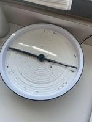

0


The FCC has approved (PDF) Reflect Orbital's Earendil-1 test satellite, which will use a 60-by-60-foot mirror to reflect sunlight back to Earth after dark. "The reflected light from the satellite is supposed to span an area about 3 miles wide on the ground," reports PCMag. It comes despite objections from astronomers and environmental groups who are concerned that the satellites will unleash intrusive light pollution. From the report: The approval is only for one satellite, dubbed Earendil-1, which is meant to test Reflect Orbital's technology for shining sunlight back to Earth. The satellite will boast a steerable thin-film reflector measuring about 60 feet by 60 feet, with the goal of powering solar farms at night or illuminating disaster-struck areas after dark to help rescue teams. Reflect Orbital envisions operating over 50,000 satellites by 2035, effectively surrounding the Earth with a fleet of mirrors. The proposal has faced stiff pushback from environmental groups and astronomers who are concerned that the satellites will unleash intrusive light pollution. The opposition has been so strong that the FCC received over 1,800 public comments on the application, many of them objecting to Reflect Orbital's plan for Earendil-1.
[...] [T]he FCC approved the satellite, noting the grant is only "for a single demonstration satellite" to test an innovative technology that could advance American leadership in space. "The Communications Act states that it is the policy of the United States to 'encourage the provision of new technologies and services to the public,' and Reflect Orbital's demonstration satellite is an example of a potentially groundbreaking technology that the Commission has found is in the public interest to support," the order says. But on the most controversial aspect of the satellite, the FCC said the concerns around Reflect Orbital's solar reflector are "unrelated to the Commission's role in authorizing use of radiofrequency spectrum, and even if the Commission had authority to review and condition these operations (which it does not), these harms are unlikely to occur.
In addition, the commission said that U.S. courts have blocked the FCC from using "a generalized public interest requirement beyond its statutory authority in regulating communications. Accordingly, the operations of a solar reflector in space would not be reviewed as part of the Bureau's public interest analysis." The regulator also noted that conducting an environmental review for the satellite went beyond its authority. Even if the FCC did have the power, the commission emphasized that the grant is for a single satellite, not 50,000. "The majority of these comments focus on a hypothetical plan to deploy tens of thousands of satellites, and those who argue the single satellite will harm the human environment do not demonstrate with specificity the potential harm will be caused by the single satellite, but rather rely on the same studies as the commenters objecting to a larger constellation," the FCC adds.
Read more of this story at Slashdot.
China successfully recovered an orbital rocket booster for the first time, landing the Long March 10B's first stage into a net-equipped sea platform after its maiden launch. "This mission marks my country's first successful controlled recovery of a launch vehicle and the world's first network-based recovery of a launch vehicle," the China Aerospace Science and Technology Corporation (CASC) announced via social media shortly after the launch. (Translation by Google.) "It signifies a historic breakthrough for my country in the field of reusable rocket technology and will lay a solid foundation for accelerating the improvement of my country's space access capabilities." Space.com reports: The Long March 10B is a two-stage rocket that stands about 207 feet (63 meters) tall, according to the state-owned CASC, the main contractor for China's space program. The vehicle's first stage burns kerosene and liquid oxygen (LOX) propellants, whereas the second stage uses LOX and liquid methane. In reusable mode, the Long March 10B can loft about 16 tons of payload to low Earth orbit.
And the rocket flew with a payload on its debut liftoff -- a satellite that successfully reached "its predetermined orbit," according to the CASC update. That post did not provide any details about the spacecraft or its orbit. It did give a brief rundown of the first-stage recovery, however. "Approximately 6 minutes after the first and second stages separated, the first stage returned vertically and was successfully recovered at a sea-based recovery platform using a net system," CASC officials wrote, noting that launch occurred from the Hainan Commercial Space Launch Site on Friday at 12:15 a.m. EDT (0415 GMT; 12:15 p.m. Beijing time.) "The launch and first-stage recovery missions were a complete success."
Read more of this story at Slashdot.
NHTSA is ordering autonomous vehicle developers to explain by the end of the month how they will stop driverless cars from interfering with police, firefighters, and paramedics. TechCrunch reports: [NHTSA Administrator Jonathan Morrison] noted in the letter (PDF) that the agency has "identified a clear pattern of driverless AVs interfering with law enforcement and other first responders," citing instances in which these vehicles drove into active emergency scenes, blocked the paths of ambulances and firefighters, or failed to recognize and respond to basic safety conditions like flashing lights, flares, smoke, fire, and traffic cones. The agency has demanded that AV developers present their "solutions" to this problem by the end of the month.
"Let me be clear: the inability to detect and appropriately respond to such situations represents a functional insufficiency," Morrison's letter reads. "Emergency scenes are not rare or extreme 'edge cases.' As such, NHTSA is today issuing a call to action for AV developers and operators to immediately focus their resources on fixing this issue." The agency doesn't explicitly call out any particular company in the letter; however, the details suggest it is directed at robotaxi operators like Waymo.
[...] The agency's letter to AV developers doesn't say what the consequences would be if the request is ignored. Nor does it outline what the acceptable solutions would be. But the agency does imply it would hold companies accountable, just as it does human drivers who impede law enforcement. "Every second matters when law enforcement officers, firefighters, or paramedics are answering a call because lives are on the line," the letter states. "That is why human drivers who impede these operations are subject to fines and even jail time."
The agency also noted in a press release accompanying the letter that it's making progress on updating Federal Motor Vehicle Safety Standards (FMVSS) requirements, which govern vehicle design and equipment requirements. These proposed changes could help autonomous vehicle companies like Tesla and Zoox, which are developing vehicles without steering wheels, pedals, or other features required on human-driven cars. The agency has already proposed rules that would eliminate the need for windshield wipers, sun visors, defogging systems, and tire placards. The agency released a new 2026 Regulatory Plan and Unified Agenda last week, outlining its proposals.
Read more of this story at Slashdot.
On October 1st, New York City will become the first U.S. city to ban deceptive subscription practices, requiring companies to offer simple cancellation options or face fines of $525 per user subscription, back fees, and additional penalties. The Mamdani administration is also proposing a junk-fee rule requiring sellers, landlords, hotels, and other businesses to "advertise the total price for any good or service, including all mandatory additional charges and fees, up front." The Guardian reports: "People shouldn't have to wait on hold for half an hour or send a certified letter or show up to a store in person in order to cancel" a subscription, said Samuel AA Levine, the city's commissioner of consumer and worker protection, in an interview. The new measures are expected to be announced in a press conference on Friday morning.
The proposed fee rule could have an especially wide impact, sending ripples through New York's expensive housing market, where about 70% of residents rent. Apartment renters in the US face a rising tide of add-on fees such as "boiler management" and "lifestyle" charges from management companies, which make true rental costs hundreds of dollars higher than the price stated on real-estate company websites.
If the proposed renters rule passes after public comment and hearing, any mandatory fees, including annual ones, would need to be included in the stated monthly rental price, Levine said. The current situation creates "a scenario where rather than competing on price, companies are competing on their ability to hide the true price. That's the worst kind of incentive" -- and one that deeply distorts the market, Levine said.
Read more of this story at Slashdot.
An anonymous reader quotes a report from Ars Technica: The European Union is ramping up pressure on Meta to make big changes to Facebook and Instagram after the European Commission preliminarily found that features like autoplay, infinite scroll, and highly personalized content recommendations were addictive. On Thursday, the EC said its investigation indicated that "Meta did not adequately assess the risks of its addictive design on the physical and mental wellbeing of users, including minors and vulnerable adults." "These features fuel the user's urge to keep scrolling and shift the brain into 'autopilot mode,' contributing to unhealthy habits and compulsive use," the commission said. Over the next few months, Meta will have an opportunity to dispute the claims, and it has already taken a defensive stance. Meta's spokesperson, Ben Walters, told Reuters that Meta disagrees with the commission's preliminary findings, which supposedly "don't accurately take into account the significant steps we've taken to protect teens."
"Since this investigation began, we rolled out Teen Accounts that automatically protect teens and put parents in control -- allowing them to block access to Instagram at night and cap daily screen time at just 15 minutes," Walters said. However, the EC emphasized that Meta's current mitigation efforts, including time management tools activated by default for teens, "failed to effectively tackle the risks stemming from its addictive design." Additionally, parental controls were deemed "only effective if parents and guardians possess adequate technical expertise" and dedicated "effort and time to understand them effectively." "This undermines the efficiency of such measures in addressing the inherent risks posed by Instagram and Facebook's addictive design," the EC said, particularly for minors.
At this stage, the EC recommended that Meta consider "disabling key addictive features such as 'autoplay' and 'infinite scroll' by default, implementing effective 'screen time breaks,' and adapting its recommender system to make it less engagement-oriented." If Meta fails to make changes to comply with the EU's Digital Services Act, the company risks fines up to 6 percent of its global annual turnover when the EC makes its final decision in the coming months. "Our starting point is that, based on our findings, this design is too addictive and changes need to be made," Henna Virkkunen, the EU's tech chief, told Reuters. "The next step is either that Meta changes its design or a non-compliance decision will follow," she said, noting in the press release that the EU's priority is "protecting the physical and mental health of Europeans." "The Digital Services Act provides a clear framework to hold platforms accountable for the addictive design and effects of their services," Virkkunen said. "We are fully committed to enforcing our legislation in Europe."
The report also notes that the EC will share findings from experts on Monday that "could help pave the way for a Europe-wide social media ban for teenagers." It's not looking much better for Meta in the U.S., either. The company faces a lawsuit from 29 states that claim Meta's platforms addict kids. "That trial begins in August, and states may seek up to $1.4 trillion in penalties if Meta is found guilty," reports Ars.
Read more of this story at Slashdot.
An anonymous reader quotes a report from Ars Technica: Humanoid robots have surgically removed the gallbladders from living animals in an unprecedented medical experiment -- but not as autonomous machines capable of replacing human doctors. Instead, skilled human surgeons remotely controlled the robots' movements in a new example of human-robot teamups. The teleoperated humanoid robots completed two minimally invasive surgeries by removing gallbladders from live pigs during a preclinical trial that was published in the journal Nature. If this approach eventually proves clinically ready for human patients, surgeons could use such humanoid robots to remotely perform robotic-assisted surgical care in smaller hospitals and clinics that lack the resources to install specialized but expensive surgical robots.
The experiment used a Unitree G1 humanoid robot made by leading Chinese robotics company Unitree. The cheapest baseline G1 model with effectively non-functional hands has a starting price of $13,500 and shipping costs ranging between $300 and $1,200, whereas adding crucial upgrades such as dexterous robotic hands can easily push the cost beyond $67,000. But such humanoid robots made in China are still significantly cheaper than specialized surgical robots like Intuitive Surgical's da Vinci Surgical System, which can cost anywhere between half a million dollars and several million dollars. The specialized surgical robots can also weigh about 1,800 pounds and take up considerably more space in operating rooms. By comparison, the Unitree humanoid robots, standing at 5 feet tall and weighing just 60 pounds, may be more suitable for smaller clinical settings in remote areas.
Read more of this story at Slashdot.
Longtime Slashdot reader schwit1 shares a report from Inside Higher Ed: For the first time since he started teaching Welfare Economics and Social Choice Theory nearly two decades ago, Brown University economics professor Roberto Serrano gave his students a take-home midterm this spring. Quite a few students had expressed anxiety about being in a classroom after a gunman killed two students and injured nine in a December mass shooting at Brown, and so "it was appropriate," he said, to allow students to take their exams at home. But by the end of the semester, Serrano regretted the decision. Dozens of students in the class likely used artificial intelligence to cheat and earn perfect or near-perfect scores on their midterm, he said. Serrano in turn made the final exam in-person, which led more than a dozen students to drop the course and even more to fail it.
Administrators' response to the widespread cheating event has been "meek," he said, and the incident has raised questions about how universities can -- and should -- respond to AI-enabled cheating at scale. "I am not declaring [the midterm] void for now. I am going to give the class a chance to prove me wrong," he wrote. "That is, if the distribution of the final exam is roughly similar to the distribution of the midterm, I will count the midterm. Otherwise, which is of course what I expect to happen, I will declare the midterm void and reweigh the final accordingly." Serrano heard crickets from his students, but 18 of them subsequently dropped the class. Nine students remained enrolled but did not take the final exam. And Serrano said the results proved him right; three students earned a zero, and the average score on the final was 48.6 percent -- by far a historic low, he said. Previously, the average final exam score had never dropped below 65 percent. Only a few students scored similarly to how they did on the midterm.
Read more of this story at Slashdot.
Dutch intelligence agencies say Russian hackers have been hijacking unsecured internet-connected cameras, including likely doorbell and security cameras, to spy on NATO military bases and transport routes used to move weapons to Ukraine. "Organisations with IP [internet protocol] cameras on these routes have now been warned so that they could take action," said the AIVD domestic security and MIVD military intelligence agencies. Targeted NATO member states include the Netherlands and Ukraine. The Telegraph reports: While the intelligence agencies did not specify the type of cameras hacked, the doorbell systems are frequently used by people to monitor their property from mobile phones. Hackers then use readily available apps to scan for devices that might be accessible. The Dutch investigation found that many of the cameras were unsecured, and "often have standard passwords, outdated firmware and standard configurations." They said: "When the IP camera is identified, the malicious party can attempt to access the IP camera via the internet. This is often relatively easy, because many IP cameras connected to the internet are insufficiently secure."
[...] The practice is now considered easier and cheaper than using drones and satellites to gather intelligence. It also aids operational surprise because most camera owners are blissfully unaware their devices have been penetrated by hackers. Ground-based cameras offer a unique perspective on the terrain, which isn't the case with conventional aerial-based spy kit.
Read more of this story at Slashdot.
Disney is exploring a free tier for Disney+ that would make some content available without a subscription. According to Nielsen data, the three largest free streamers accounted for 18.7% of watch time on U.S. TVs in April, up from 16.8% a year earlier and 12.7% in April 2024. Business Insider reports: Product and tech chief Adam Smith spoke about enabling free-tier content during a streaming town hall on Thursday afternoon, one staffer said. Smith didn't share a timeline for this initiative or a sense of the scope, this person added. A person familiar with Disney's streaming strategy said these talks are part of an ongoing discussion about concepts to better serve fans. Currently, the Disney+ and Hulu bundle costs $12.99 a month with ads or $19.99 without ads at full price.
Read more of this story at Slashdot.
OpenAI is retiring its ChatGPT Atlas browser less than a year after launch. Going forward, its browsing features will be shifted into a redesigned ChatGPT desktop app that also combines Codex, a built-in browser, and "ChatGPT Work" for acting across apps and files. PCMag reports: OpenAI disclosed Atlas's retirement in a Thursday post introducing a more powerful ChatGPT desktop app, following reports that the company planned on turning it into a "superapp." [...] In a tweet, OpenAI product staff member James Sun added, "The current targeted date for deprecation is 8/9, and we'll share more information in the upcoming days both in-app and via email."
The sunsetting means the Windows version of ChatGPT Atlas has been canceled, though the ChatGPT desktop app is still available on both Mac and Windows. The company is already touting the built-in browser, noting: "You can ask ChatGPT to research a market, compare sources, pull information from websites, or open and refine files from Google Workspace and Microsoft 365 inside the app. It can use the browser to bring in fresh context, take steps across web pages, and keep the work moving while you review and guide the result."
Read more of this story at Slashdot.
OpenAI's CEO of AGI deployment, Fidji Simo, is stepping down from her full-time role and becoming a part-time adviser after taking extended medical leave for a chronic neuroimmune condition. "Three months ago, I had to go on medical leave after a severe exacerbation of a chronic illness I've lived with for seven years," Simo wrote in a post Thursday on X. "During that time, it became clear that the road to recovery would be much longer and more complex than I had anticipated -- and that I needed to focus on it fully." Wired reports: Simo joined OpenAI's board of directors in March 2024. The following year, CEO Sam Altman hired her to take on the product and business organizations so he could focus on research and the company's data center buildout. Previously, Simo was the CEO of Instacart and head of the Facebook app at Meta.
Shortly before starting at OpenAI, Simo experienced a significant health relapse. She was diagnosed with postural tachycardia syndrome, or POTS, in 2019. "For my entire time here, I've postponed medical tests and new therapies to stay completely focused on the job and not miss a single day of work," she told OpenAI staff in a memo back in April, announcing her temporary departure. "It's now clear that I've pushed a little too far and I really need to try new interventions to stabilize my health."
News of Simo's medical leave came amid a larger executive shakeup that saw Brad Lightcap, OpenAI's former COO, transition to a role overseeing special projects. OpenAI president and cofounder Greg Brockman took over OpenAI's product strategy. In the months since Simo stepped back from OpenAI, the company further reorganized its product teams, positioning Thibault Sottiaux as head of the company's core products, including ChatGPT.
Read more of this story at Slashdot.
Microsoft plans to disable and remove OWA Light, the lightweight Outlook Web Access client for Exchange Server, in an upcoming update expected in August 2026. The company says retiring the two-decade-old legacy interface will reduce attack surface and engineering complexity, pushing users to the modern Outlook on the web experience instead. BleepingComputer reports: "OWA Light was an important compatibility experience when the web needed it. Today, the full Outlook on the web experience is the right place for us to focus," the Exchange Team said on Wednesday. "Retiring OWA Light will help reduce legacy surface area, simplify ongoing engineering work, and allow us to continue improving the experience customers use every day."
Microsoft introduced OWA Light roughly two decades ago as an alternative to OWA Premium, offering a simplified web interface for systems that didn't have Internet Explorer 6 or later installed or ran older web browsers. At the time, the company said that OWA Light offered a cleaner look, faster logon times on low-bandwidth Internet connections, and worked in locked-down browser modes (such as kiosks).
Microsoft deprecated OWA Light as of August 19, 2024, and announced this week that the OWA Light experience will likely be removed from Exchange Server (on-premises) next month. "In an upcoming Exchange Server update (estimated in August 2026), we plan to disable and remove the OWA Light experience. After that change is introduced, users will no longer be able to choose or be redirected to OWA Light and should use the modern Outlook on the web experience instead."
Read more of this story at Slashdot.
Nobel-winning chemist Omar Yaghi is leaving UC Berkeley for China's Tsinghua University, where he will lead a new AI institute focused on accelerating the discovery of advanced materials. "Last week, Tsinghua University in Beijing welcomed Dr. Yaghi in an appointment ceremony, calling him one of the world's foremost chemists," reports The New York Times. "The university said he saw his new post as an opportunity 'not to slow down, not to repeat what has already been done, but to do science with more energy, more intensity, and more ambition than ever before.'" From the report: Dr. Yaghi was born in Amman, Jordan, to Palestinian refugees whose one-room home lacked electricity and running water. Early on, he became fascinated with a schoolbook's depiction of atomic building blocks. When he was 15, his father, a butcher, sent him to the United States. Last year, before flying to Stockholm to receive his Nobel Prize, Dr. Yaghi in an interview with The New York Times voiced concern about Mr. Trump's immigration policies, saying that they endanger the nation's system of universities, companies and governments that promote scientific excellence. "I think it's regrettable," he said of Mr. Trump's nationalism. "We have to know that people coming from different backgrounds improve the level for everybody involved," he added. "That's an amazing story. Great thinkers can improve not only the U.S. but the world."
Dr. Yaghi joined the University of California, Berkeley, in 2012, and while there earned many awards for his scientific advances. He received his Nobel Prize for helping discover a world of chemistry in which molecular building blocks are assembled into structures that possess vast internal surface areas -- the largest of any known substance. His porous structures can act like sponges that readily absorb, store and release gases and vapors. He named them metal-organic frameworks. The metal atoms form an adjustable framework that can hold chemicals associated with life -- carbon atoms in particular. While deeply theoretical, the frameworks are so radical, innovative and flexible in nature that materials experts and companies foresee many commercial uses for them. The frameworks can, for instance, harvest water from desert air. In 2018, Dr. Yaghi's students at Berkeley tested the idea in the Mojave Desert in California, finding that a small passive harvester could each day produce nearly three cups of pure, drinkable water. The device is now nearing commercialization.
In the interview with The Times, Dr. Yaghi credited the invention to his boyhood efforts to secure water for his family. The municipal pipes worked for only a few hours every week or two. That hardship, he added, shows how the diverse experiences of emigres can lead to unexpected breakthroughs. Dr. Yaghi has longstanding ties with Tsinghua University. In 2022, the Beijing school appointed him as an honorary professor and in that role he closely followed its work in chemistry, materials science and related disciplines. Now, on joining Tsinghua full time, Dr. Yaghi is being named as the head of a new A.I. institute for science research that will focus on the design and synthesis of new materials. Its underlying aim, the university said, is to "overcome the efficiency bottlenecks of traditional trial-and-error approaches" and shorten the usual cycles of discovery.
Read more of this story at Slashdot.
An anonymous reader quotes a report from The New York Times: Apple on Friday accused OpenAI of stealing secrets about products still in development, setting up a legal face-off between two of the world's biggest tech companies. In a lawsuit filed in U.S. District Court for the Northern District of California, the consumer tech giant said that OpenAI, a leader in artificial intelligence that has a new hardware business, had asked job candidates from Apple to share details about secret projects and to bring device components and prototypes to their interviews. Apple also accused an OpenAI employee of downloading internal documents from a laptop owned by the iPhone maker. OpenAI used the confidential information to approach Apple's manufacturing partners, including asking one partner to demonstrate Apple's technique for finishing metal on its devices, the lawsuit says. Apple sent a letter to OpenAI in February to raise concerns that confidential information could be "making its way to OpenAI's business improperly," according to the suit. OpenAI did not respond, Apple said. "OpenAI's nascent hardware business now rests on the shakiest of foundations, rotten to its core by its illegal reliance on misappropriated trade secrets," Apple wrote in its lawsuit.
[...] In its lawsuit Friday, Apple accused Tang Tan, OpenAI's chief hardware officer and a former Apple executive, of coaching his hires from Apple on how to evade Apple's security processes for departing employees. Apple accused another former employee, Chang Liu, of using a former colleague's Apple-owned laptop to access and download technical documents while working at OpenAI. Mr. Liu told that Apple employee what information about unannounced products she should study before job interviews, Apple said. Mr. Liu also planned to access internal documents through an Apple-owned laptop that he didn't return when he left the company, according to the lawsuit. OpenAI had misled the manufacturing company it approached to learn about the metal finishing technique to believe it had Apple's permission to view it, according to the lawsuit. Apple is seeking an injunction that would prevent OpenAI from possessing, using or sharing Apple's trade secrets, as well as an order requiring OpenAI to return Apple's intellectual property.
Read more of this story at Slashdot.
An anonymous reader quotes a report from The Register: The European Commission has ended an investigation into possible anticompetitive practices after SAP agreed to abolish reinstatement fees and reduce back-maintenance fees. The move could reduce barriers for customers considering third-party support for products nearing the end of their vendor support terms, including thousands of large businesses that rely on SAP ERP Central Component (ECC) to run their business operations. SAP's mainstream support for ECC ends in December 2027, while customers can opt for extended maintenance until December 2030 by paying an additional two percentage points on their maintenance fees. The most recent figures from Gartner showed that in Q4 2024 only 39 percent of worldwide ECC customers -- from a total of 35,000 -- had bought or subscribed to licenses to start their transition to SAP S/4HANA, the replacement ERP product.
In September last year, the European Commission launched a formal investigation into SAP's behavior in the aftermarket for maintenance and support services in Europe. It said it was responding to concerns that SAP restricted competition in this crucial aftermarket by making it harder for rivals to compete, leaving European customers with fewer choices and higher costs. In October, SAP published its response. "SAP's commitments aim at improving the financial attractiveness for customers who wish to reinstate SAP maintenance and support services. Thus, future costs associated with reinstatement will not financially prevent customers from choosing to terminate SAP maintenance and support for a given period of time," the document said (PDF).
SAP has now agreed to abolish reinstatement fees and reduce back maintenance fees charged to customers who return to SAP's support after a period of absence, the Commission confirmed. It also agreed to clarify conditions that allow customers to choose different maintenance and support service providers and different levels of support from SAP. The agreement is relevant to customers considering third-party support to extend their use of ECC beyond vendor maintenance. For example, last year, European retailer Kingfisher -- owner of well-known UK brands B&Q and Screwfix -- told a Gartner conference it had chosen Rimini Street to support ECC 6.0 because it saw insufficient value in migrating to SAP S/4HANA. [...] The commitments offered by SAP will remain in force globally for ten years.
Read more of this story at Slashdot.
New York Times : How members of the extremist group Boko Haram are using AI chatbots to design explosives, fix or upgrade weapons, and brainstorm attack ideas — A.I. chatbots are not just a propaganda tool for violent extremists but are aiding in bomb construction and attack planning, new research finds.
Bloomberg : SK Hynix's historic US stock market listing is a bet that the AI boom is breaking the memory chip industry's decades-long boom-and-bust cycle — South Korean memory chipmaker SK Hynix Inc. just pulled off the largest public listing by a foreign company in US market history.
Max Spero / Pangram Labs : An analysis of 1M+ social media posts from April 24 to June 30: ~25% of longform posts with 250+ words were fully AI-generated; on LinkedIn, the figure was 41% — A first look at analytics from our Pangram Chrome extension — Two months ago, we launched our Chrome extension to help combat the rising slop problem on social media.
Robbie Whelan / Wall Street Journal : Sources detail the Trump admin's heavy-handed intervention to aid Intel, including pushing it to expand local capacity and pressuring Apple to use Intel's fabs — The chip maker's business is improving, with government twisting the arms of potential customers and partners including Apple and Nvidia
Bloomberg : Sources: activist investor Elliott has built a large stake in car insurance software maker CCC, which is exploring a potential sale and has a ~$3.5B market cap — Elliott Investment Management has built a large stake in car-insurance software provider CCC Intelligent Solutions Holdings Inc. …
Maxwell Zeff / Wired : OpenAI's head of safety, Johannes Heidecke, is leaving as OpenAI integrates its research and safety teams; Mia Glaese will become VP of research and safety — Johannes Heidecke's departure comes as OpenAI tries to further integrate its research and safety teams.
Thinking Machines Lab : Thinking Machines says its mission is to build AI that people and organizations can shape and make their own, and that “extends human will and judgment” — The mission of Thinking Machines is to build AI that extends human will and judgment. — Artificial intelligence …
Reuters : SK Hynix CEO Kwak Noh-Jung says the memory industry is heading for its worst-ever supply shortage in 2027 and demand will outstrip supply beyond 2030 — SK Hynix (000660.KS) Chief Executive Kwak Noh-jung said the global memory industry is heading for its worst-ever supply shortage in 2027 …
Corbin Bolies / Variety : Meta says it will discontinue a feature that allowed users to generate images in Meta AI using public Instagram accounts, following days of criticism — Meta said it will discontinue an AI feature that allowed users to generate images using public Instagram accounts following days of criticism …
Marcus Mendes / 9to5Mac : In response to Apple's trade secret theft lawsuit, OpenAI says “we have no interest in other companies' trade secrets” — OpenAI has issued a formal statement in response to Apple's lawsuit accusing the company of trade secret theft. Read it below. — OpenAI denies Apple's allegations
Eric Geller / Cybersecurity Dive : CISA says weak security controls around the use of public GitHub repos allowed a contractor to accidentally leak private cloud access keys and other credentials — The agency's blog post came as lawmakers pressed the agency for answers. — Weak security controls around the use …
Lucas Ropek / TechCrunch : Bluesky interim CEO Toni Schneider becomes the company's permanent CEO, four months after succeeding Jay Graber — In March, Bluesky's longtime CEO, Jay Graber, stepped down from that role to become its chief innovation officer. Graber was immediately succeeded by Toni Schneider …
Noam Scheiber / New York Times : A US NLRB judge rules that Atlassian had illegally fired an employee in 2023 for pushing back against manager layoffs, and orders reinstatement and compensation — A federal labor law judge determined last week that the software maker Atlassian had illegally fired an employee who questioned company policy changes.
Sarah Perez / TechCrunch : Apple says OpenAI leadership “normalized” misconduct and OpenAI's hardware business is “rotten to its core by its illegal reliance” on stolen trade secrets — Apple filed a lawsuit Friday against OpenAI over allegations of trade secret theft and breach of contract.
Aaron Tilley / The Information : In its lawsuit, Apple chronicles in vivid detail how its former employees that went to work for OpenAI allegedly violated their confidentiality agreements — In the months ahead of Apple's lawsuit against OpenAI on Friday, the iPhone maker's concerns about OpenAI's plans to compete in consumer hardware have mounted steadily.